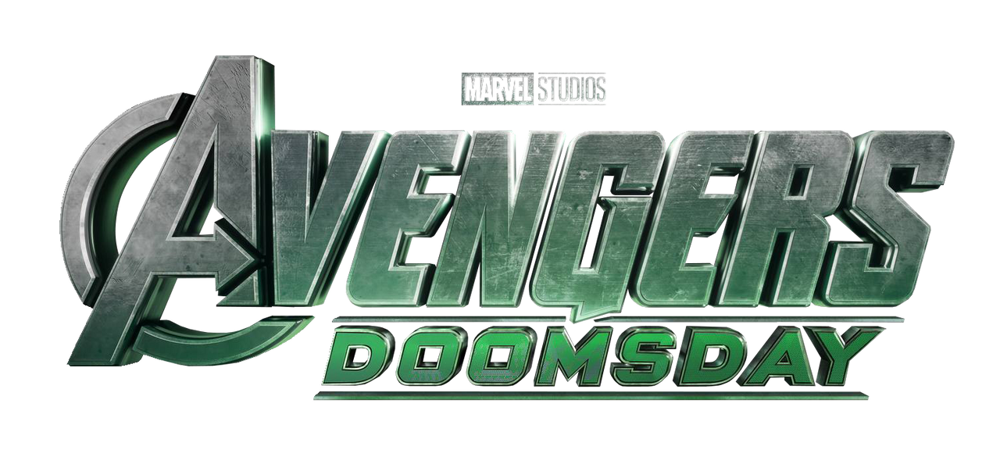
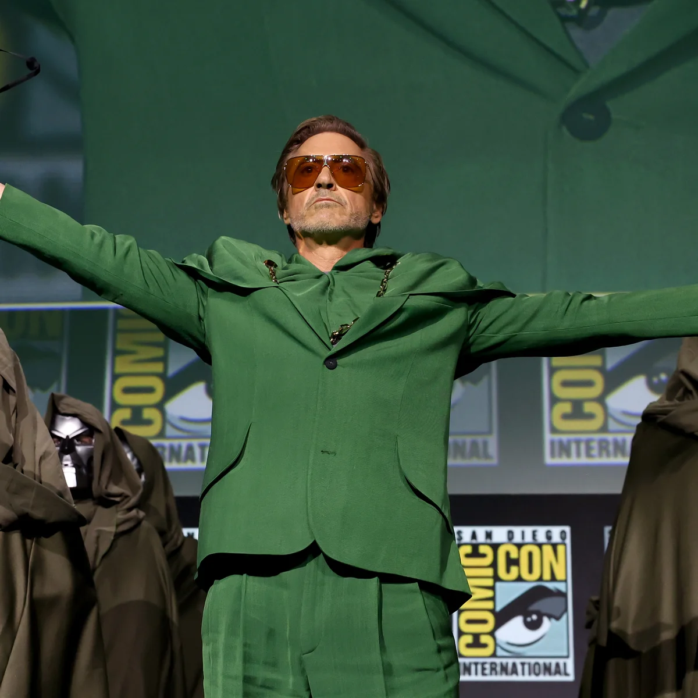
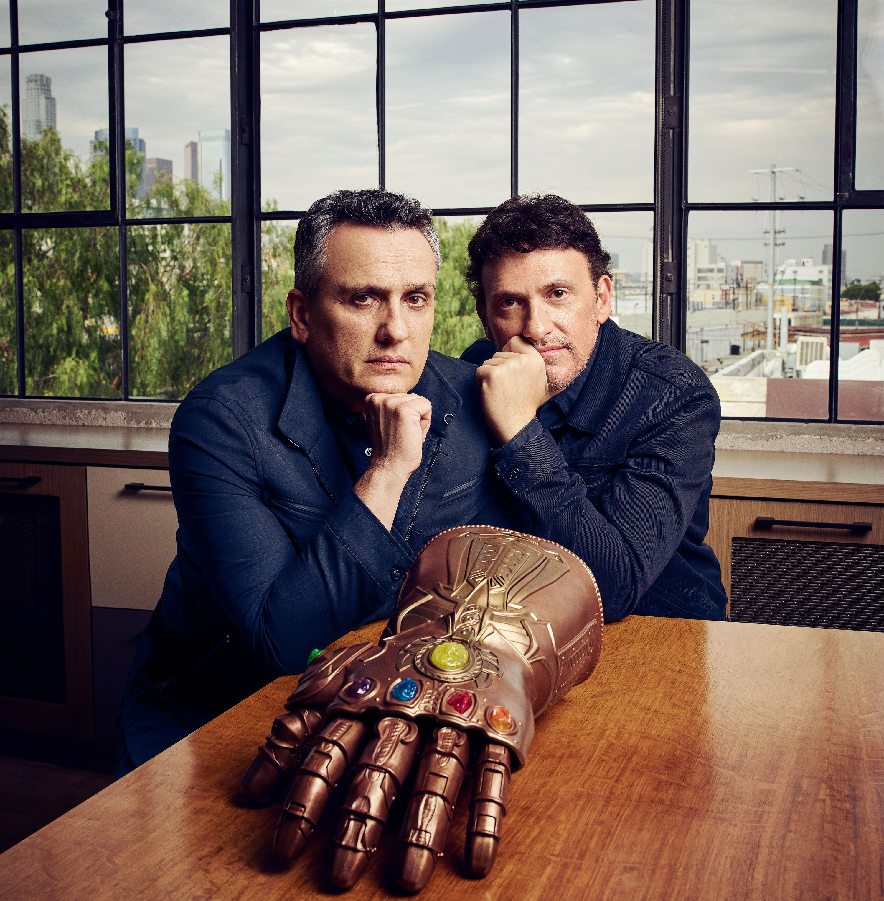

Avengers Doomsday is as upcoming superhero movie by Marvel Studios produced by Disney. The movie is a sequal to Avengers Endgame.  The movie is planned to release on May 1st, 2026. The movie will follow the heroes of the MCU facing the biggest threat to the Multiverse yet, Victor Von Doom. Doomsday is also planned to feature many characters from not only MCU projects, but previous Marvel films from before the MCU.
 I've been a fan of the MCU for a far bit. I keep up with the movies and try to watch all the shows. Even if the MCU has had a pretty rough few years, I think that they've began to get their footing back with movies like Deadpool and Wolverine. This movie also has the plus of bringing Robert Downey Jr. back as the main villian, Doctor Doom. While many people didn't agree with this casting, I think it has the oppertunity to create the best villian in MCU history.
 Avengers Doomsday is the first part of a duology of films. A year later in 2027, Avengers Secret Wars will release. This movie will also be directed by the Russo Brothers, the directors of Avengers Infinity War and Endgame. Not only will Doomsday feature Robert Downey Jr., but other actors like David Harbour, Pedro Pascal, Tom Holland, and more will appear. Needless to say, this film will be epic.